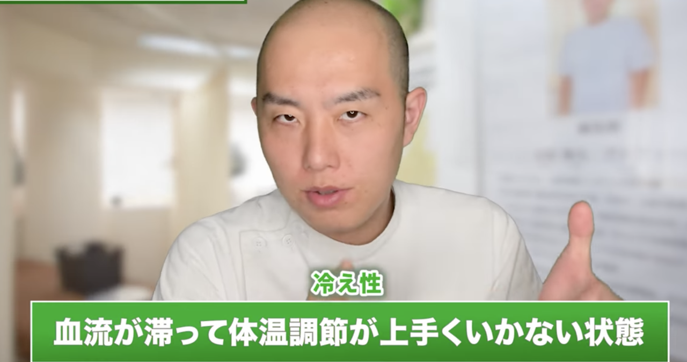
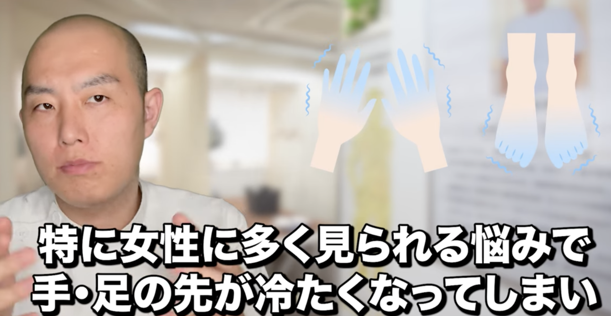
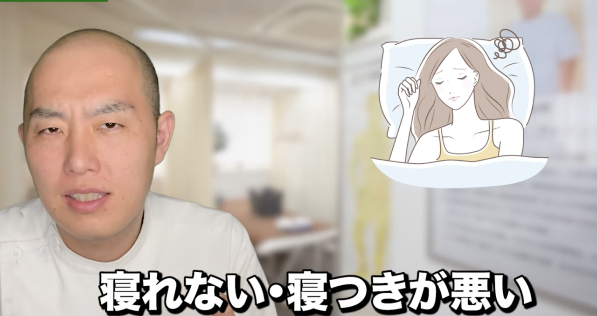
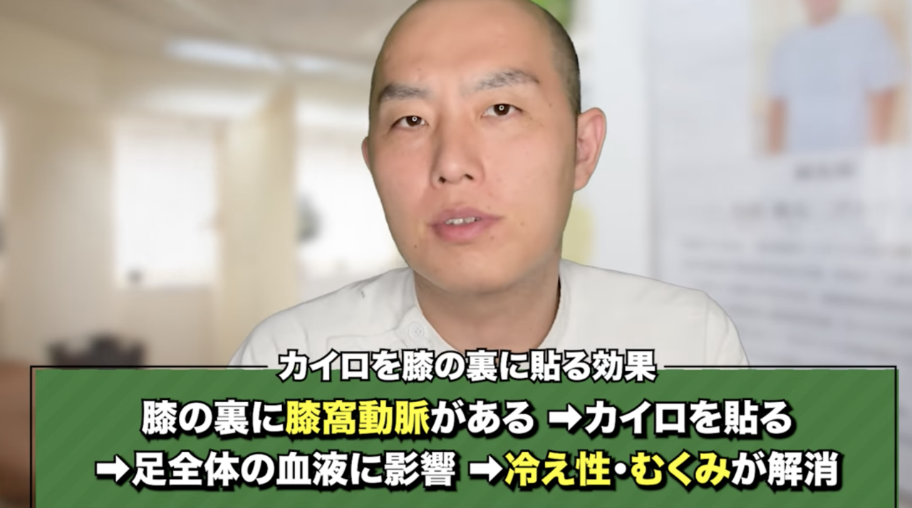
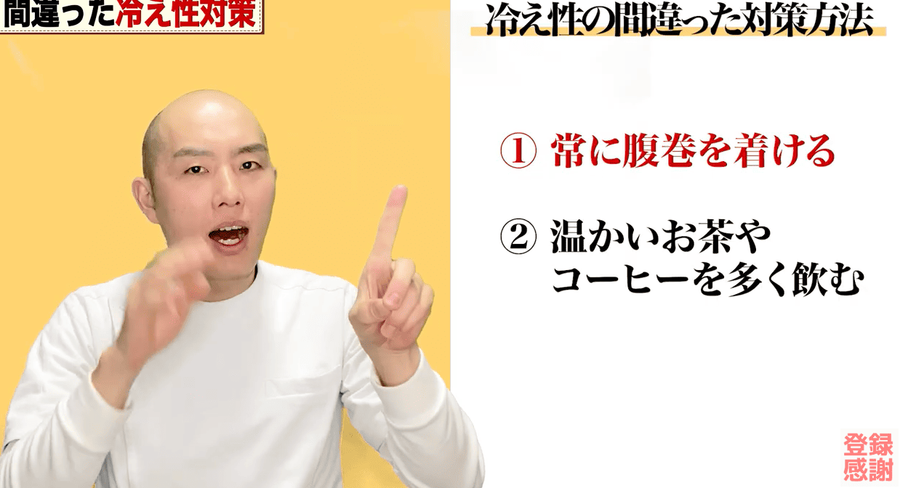
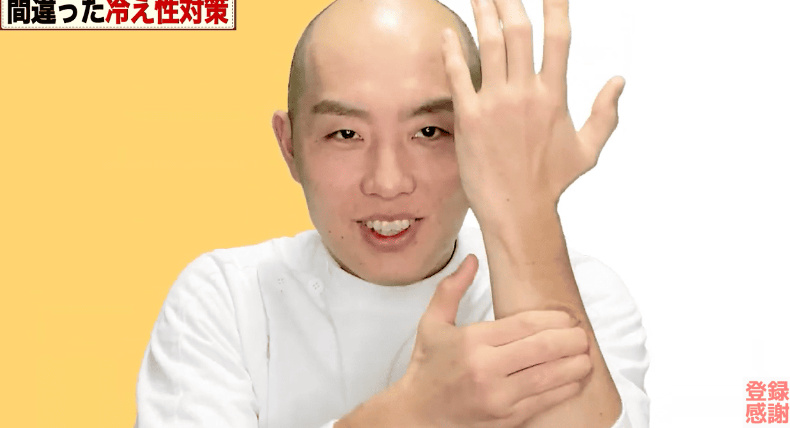

冷え性の鍼灸
末梢血管の収縮により気温に関係なく手足や腰が冷える状態です。当院では閉じた血管をこじ開ける鍼灸と正しい温めケアで根本改善を目指します。
まず知っておきたい要点と改善の流れ
冷え性は成人女性の半数以上が抱え、近年は男性にも増えている不調です。運動不足による筋肉量低下や薄着・締め付けに加え、ストレスで交感神経が優位になり続けると血管平滑筋が収縮し、末梢への血流が滞ります。なお、1日中腹巻をつけ続けると自力の発熱力が落ちやすく、カフェインを含むお茶・コーヒーの多飲も血管収縮や利尿作用で冷えを招くことがあります。（公式解説）
このようなお悩みはありませんか？
- ✓季節や室温に関係なく手先・足先や腰が冷えてつらい
- ✓靴下を重ね履きしても足が温まらず寝つきが悪い
- ✓ストレスや運動不足が続き、むくみや肩こりも気になる
- ✓腹巻や温かいコーヒーで対策しているが冷えが改善しない
当院の施術アプローチ・改善の流れ
なぜ鍼灸で改善へ向かうのか？（作用機序の図解）
冷え性に対する鍼灸は、心拍変動・血管トーンを整える自律神経サポート機序を通じて、お体本来の回復力を引き出します。

循環器専門医の標準治療を絶対前提とし、手首や背部の安全な経穴へ低刺激でアプローチします。
心臓への過剰な交感神経刺激を穏やかに鎮め、心拍リズムと血管緊張の急変を抑えます。
ストレスで固まりやすい胸郭や横隔膜の緊張を解き、酸素摂取とリラックス反応を促します。
内服管理を厳守しながら、疲労やストレスが引き金となる症状不安の軽減を支えます。
院長YouTube解説・関連動画
冷え性は非常に女性に多い悩み

冷え症は非常に女性に多い悩みです。成人女性の半数以上は冷え症で悩んでいるとも言われている程です。特に手足の先など体の中心から離れた末梢部分や、腰が冷える人が多いです。
女性の場合、食生活や月経の影響によって貧血の人が多いことや女性ホルモンの乱れによって自律神経のバランスを崩しやすいことが原因になって冷えが起きることが多いと考えられています。
しかし、最近は女性だけでなく男性の冷え症も多くなっています。
冷え症は、血液の流れが悪いことが原因で毛細血管へ温かい血液が流れず、血管が収縮し、手足などが冷えてしまう状態です。
冷え性の場合、気温には関係なく体が温まりません。冷え性では真夏の季節であったとしても冷え症の症状は現れます。
冷え症の原因としては毎日の生活習慣が非常に深く関係してきます。冷えの原因が貧血や低血圧、甲状腺機能低下症、膠原病など明らかにわかる場合、冷えは西洋医学的に改善する必要がありますが、冷えのある人の多くの場合は明らかな異常がわからないまま、手足が冷えたり寒い感じがしたりするという冷えの症状があります。
明らかにわかる原因のない場合の冷えは、一般的には冷え性体質とされます。
冷え性の原因は運動不足、ストレス、生活習慣の乱れ

冷え性の原因の1つに運動不足があります。運動不足は体の代謝を悪くし、血液の流れを悪くする原因です。
筋肉量が少ない場合、体の中で熱を作ることが出来ないため、上手に体を温めることができないのです。
特に女性は男性よりも筋肉量が少ないため熱を作りにくい体質です。そのため、女性は男性より冷えやすい体質で冷え性の人が多いのです。
冷え性が女性に多い原因は、女性は男性に比べ筋肉量が少なく脂肪が多いからです。女性は筋肉が少なく付きにくいため熱を作る力が弱く、さらに、脂肪が多く付きやすいです。
脂肪は１回冷えると温まりにくいという性質があるため、冷えの原因になるのです。女性の冷え性は子宮や卵巣などの臓器があることや月経があることも関係しています。
子宮や卵巣などは血流を妨げる内臓です。そのため、女性は男性より腹部の血流が悪くなりやすいです。
月経の時、血液が出てしまうために血液が減り熱を伝える血液が体の端まで行き渡らないことも冷えの原因です。
薄着や衣類によるしめつけも冷え性の原因となります。寒い場所でスカートなどをはいて薄着すると体を冷やすことになります。
下着やタイトな衣類によっての締め付けも体の血流が悪くなり冷え症の原因になります。
男性も年齢を重ねるにつれて筋肉量や臓器の機能が低下し、熱を生むことが出来なくなります。
そのため冷えを感じるようになるのです。男性高齢者の場合は、冷え性は頻尿にもつながります。体を温めると肩こりや腰痛などが楽になるという人は冷えがある可能性があります。
冷え性には、ストレスの影響や生活習慣の乱れも関係しています。ストレスを感じると、自律神経のバランスを崩しやすくなります。
ストレスの多い状態が続くと緊張状態に働く交感神経が優位の状態が長くなり、末梢血管も収縮を続けてしまいます。すると、血行不良になり冷えた状態になるのです。
さらに、現代人の体温は、生活習慣の乱れが原因で下がっているといわれています。体温は元々朝が１番低くて、起きて朝食をとると上がります。その後、昼過ぎから夕方までゆっくりと上がり、夜に向かって下がっていきます。
生活習慣の乱れは自律神経のバランスの乱れにつながり、体温調節機能が乱れを起こし、冷え性になります。
夏場にエアコンのきいた部屋で冷たいものを食べることや冬場に温かい部屋にいることで、体の体温調節機能を使わない生活になっています。そのことによって元々ある体温調節機能が下がっている人が多いです。
冷え性の症状は体のいろいろな部分に不調が出る

冷え性は、寒いわけでもないのに手足が冷たかったり、布団に入っても手足が冷たくて眠れなかったり、お風呂に入ってもすぐに手足が冷えてしまったり、厚着をしても体が冷えたり、便秘や下痢になりやすかったり、何をしても痩せなかったりというように体のいろいろな部分に対して不調が起こります。
冷え症を放っておくと、どんどん不調が出てきてしまうため、しっかりと対策をすることが大事です。
冷え性の改善は原因に合わせて行う

冷えの感じ方には個人差があります。軽度の場合、冷えを感じる程度ですが、中度になってくると冷えている部分にこわばりがでます。
重度になると、冷えている部分にしびれを感じるようになります。日常生活に支障があるとできるだけ早く病院に行くことをおすすめします。
漢方では、冷えと一緒に起こる症状や部位によって、冷えの原因を考え、その原因に合わせて改善をします。
食事量が不足していることが原因で冷え性になっている場合は、きちんと食事から栄養をとり、熱を生む体を作ることが大事です。
食事制限をする行き過ぎたダイエットは控え、積極的に熱を生むたんぱく質を摂取する食生活にすると良いです。
座り仕事などでお尻の筋肉が硬まっていることが原因で冷え性になっている場合はお尻の筋肉をほぐすストレッチを行うことがおすすめです。お尻にある筋肉をほぐすことで、血流が改善されます。
内臓が冷えることが原因で冷え性になっている場合は、食べすぎに注意すること、厚着をし過ぎないこと、白湯を飲むことを心がけると良いです。
適切な食事の量を意識し、通気性の良い服を着て、白湯を飲むことを毎日の習慣にし、内臓を温めるようにしましょう。
季節関係なく、体が冷えやすい冷え性の場合は生活習慣を正すことと外側と内側の両方から温めることが大切です。
食事の量を増やしたり、きちんと睡眠をとったり、体の内側からもと外側からも保温することを心がけるようにしましょう。
栄養のある食事や適度な運動、重ね着をする、温活グッズの活用などで内側と外側の両方から温めるのです。
冷え性の間違った対策

鍼灸の現場には基本的に冷え性の人しかいません。冷え性の人にはそれぞれ特徴があり、きちんと対策をすることで軽くなったり改善したりします。
冷え性は気温とはあまり関係ありません。血流がスムーズでなければどのようなところでも冷え性は起こるのです。
🎥 他のYouTube切り抜き・解説を読む（あと1件）▼
血管の壁をこじ開けるやり方

血管の壁をこじ開けるやり方は骨と骨の間をぐりぐりすることです。
腕の骨は尺骨と橈骨で構成されています。この2つの骨の間に血管や神経、筋肉が通っているため、この骨の間を狙ってぐりぐりしましょう。押しても上の方に筋肉があって入らないためえぐって縦にぐりぐりします。
手の甲の場合は、中手骨の骨の間を狙って縦に削ぎ落とすような削ぎ落とすようなイメージで行います。
細い血管が開いたり近くを通る神経が刺激されたりするため手まで響くはずです。こじ開けた時に初めて血管が開くため思いっきりぐりぐりすることで末端が温まる感覚が出てくるはずです。是非やってみてください。
冷え性と自律神経の乱れに効果を発揮するカイロの貼り方
冷え性や自律神経の乱れに悩んでいる人は多いと思います。手足が冷たいと辛い布団に入ってもなかなか暖まらず、寝れなかったり寝つきが悪くなったりしてしまいます。ストレスが溜まりやすく体調の波が激しくなってくることも多いです。
集中力が下がったりパフォーマンスが下がったりしてしまい、単なる不快感にとどまらず日常生活に大きな影響を与えてしまうのです。
外に出かける時にポケットに入れるカイロは使っている人も多いと思いますが、誰でも気軽に行えるセルフケアとしてもっと効果的な貼り方があります。
鍼灸師の視点から冷え性だけではなく、自律神経の乱れにも効果を発揮するカイロの貼り方を5つ紹介します。
カイロはただの暖かい道具だと思っているかもしれませんが、実はカイロには科学的にも証明された効果があり温熱療法という改善法にもよく使われます。
温めることによって体の血流を促進させて、神経や筋肉の緊張を和らげる効果があります。特にカイロのように局所的に温めることによって血流が良くなった冷えや痛みを根本から改善することができます。さらに内臓を温めて全身の血流が改善されるため、消化不良や便秘、ホルモンバランスの乱れが改善します。
また、首の後ろにある延髄、首の前側にある星状神経節、脊髄の胸椎にある交感神経幹などに温熱刺激を与えるとストレスを軽減するため、リラックス効果を得ることができます。これは、カイロの温熱効果が副交感神経を活性化することによって体をリラックスさせる状態に導くためです。
冷え性とは、血流が滞って体温調整がうまくいかない状態のことです。特に女性に多い悩みで手や足の先が冷たくなってしまい、時には体全体が冷えてしまうことがあります。
冷えが続くと消化不良、腹痛、免疫力低下など体の他の部分にも悪影響を及ぼします。その結果風邪をひきやすくなったり自己免疫疾患を発症したりすることがあります。冬になると寒くなる肌荒れ湿疹ができるという人も結構います。
自律神経の乱れでは、気持ちが不安定になったり睡眠の質が悪くなったりイライラしたりなど様々な不調が現れます。自律神経は体内の様々な機能を調節する神経でストレスや疲れが溜まるとバランスが崩れてしまいます。
この2つの問題は簡単には改善しないと思われがちですが、カイロの使い方で大きく改善する可能性があります。
仙骨は背中側の骨盤のちょうど真ん中にあります。この骨の上にカイロを置いてみましょう。仙骨は骨盤の中心に位置しており、腸や膀胱、卵巣、前立腺など骨盤内臓器との関係が深いです。自律神経系に作用する仙骨神経叢が仙骨の周辺を通っているため、ここをカイロで温めると副交感神経が興奮して体がリラックスしやすくなります。
特に骨盤内には大腸と小腸、膀胱、卵巣、精巣、前立腺といった腸や生殖器が密集しているため、温熱効果で内臓が活発になりやすいです。下痢をしやすい人や生理不順に悩んでいる人は仙骨をカイロで温めると改善しやすいです。
当院でも仙骨にお灸をしています。血糖値の高い人や大腸や小腸の機能が下がっている人、お腹が張りやすい人、便秘の人などにも行います。さらに子宮筋腫にアプローチする時にも仙骨を温めます。
②膝の裏
膝の裏には膝窩動脈が通っています。膝の裏の温熱刺激は足全体の血液に影響を与えるため、冷え性や浮腫の改善に効果を発揮します。膝裏は膝窩リンパ節といってリンパの排水溝になっています。膝裏のカイロはリンパの観点からも非常にオススメです。
手首には内関というツボがあり、胃腸の不調やストレスに対応するポイントとして有名です。当院でも車酔いや目眩による吐き気によく使います。冷たい指先を温めるよりも指先を担当する血管を狙った方がより温まりやすいのです。
④首の第７頸椎の裏
自律神経には副交感神経や交感神経という2つの神経があります。
交感神経の核となるのは胸髄というポイントです。胸髄は脊髄の胸あたりを担当する少し太い部分で、胸髄が興奮することで体が戦闘体制になります。それが続いてしまうと末端が冷たくなってしまったり冷えを感じやすくなったりします。胸髄にアプローチするために第７頚椎をカイロで温めてほしいです。
交感神経が昂ってしまうと皮膚に存在する立毛筋毛という立たせる筋肉が興奮します。すると近くにある皮脂腺という脂を出すところが詰まってしまってニキビができてしまいます。そのため交感神経が昂っている人は背中にニキビができやすいのです。背中にニキビができやすかったり冷え性を感じやすかったりする人は第７頚椎にカイロを貼りましょう。
⑤足の甲を足の裏
足には内臓のツボが集中しているため、足の甲と裏を温めると体全体のバランスが整います。体の解剖学的には末端を刺激することによって副交感神経が優位になります。副交感神経が昂ると末端血管が広がるため、結果的に手足の冷えが改善されるという好循環が生まれます。
足の甲と裏を温めることは心身のリラックスに関わるポイントのため、就寝前に温めると睡眠の質が上がります。
お尻の少し上が腰です。腰から降りてくると腸骨稜という骨に当たります。腸骨稜から内側に入ると上後腸骨棘という骨があります。
仙骨はちょうど背骨からゆっくり下がっていくとお尻のあたりでこの骨の塊（ひし形の骨）があります。仙骨の下には仙骨神経叢という卵巣や膀胱、大腸や前立腺などの骨盤の中にある内臓の神経があります。ここをカイロで温めることによってお腹の中の内臓を調整できます。
貼り方はカイロを仙骨の上に包み込むように貼ります。小さいタイプのカイロの場合は縦で貼りましょう。
膝を曲げると折り曲がるところにシワがあります。このシワの上に貼るのが1番ベストです。
膝の後ろの骨がちょうど凹んでいる場所に膝窩リンパ節や膝窩動脈などの大事な血管が通っているためここをカイロで温めると足の末端まで血流が温かくなりやすいです。
貼り方は膝裏のシワにカイロを横に貼ります。
手首を曲げるところにシワがあります。手首のシワから下に２cm下がったところに内関というツボがあります。
このツボにカイロを貼りましょう。貼り方は縦に内関を包み込むようにします。真横でも悪くはないですがはみ出した部分にぶつかって外れたりすることがあるため縦に貼ることをオススメします。ここを温めると胃の調整に役立ちます。
第７頸椎は首の真裏に当たる部分です。首から背中の方になぞっていくと背骨の出っ張ったところに触れます。背骨は1個1個が積み木みたいに縦に並んでいて魚の背骨のように後ろに骨が突き出してしています。
首からなぞっていくと1番出っ張ったところに指が当たります。これが第７頸椎で、ここを包み込むようにカイロを貼ります。
足の裏に関しては土踏まずに貼ることがベストです。足の甲に関しては足首が折れ曲がるところの足先寄りにカイロを縦に貼りましょう。
細かい筋肉がいっぱいあるため血流が悪くなりやすく冷たくなってしまいます。少し曲がる（背屈）という運動をする方の足の甲に貼ることをオススメします。
この5つのポイントにカイロを貼ることで体を内側から温めて血流を促進し、心と体のバランスを整えることができます。ぜひ今日から日常生活に取り入れてほしいです。
循環器・動悸・高血圧・心不全補助の全身ツボ図解
実際の施術ではお一人おひとりの体質・症状に合わせて選穴しますが、動悸・不整脈・本態性高血圧・慢性心不全の循環器治療併用サポートの臨床でよく用いられる代表的なツボの目安です。

📌 代表的なツボの詳細一覧表を開く（6穴） ▼
| ツボ名 | 位置の目安 | 主な狙い | セルフケアの注意点 |
|---|---|---|---|
| 内関（ないかん） | 手首の横ジワから指3本分肘寄りの中央 | 動悸・不整脈・狭心症補助で最も研究されている心包経の要穴 | 胸痛・冷や汗・失神がある場合は直ちに救急受診してください。 |
| 膻中（だんちゅう） | 胸の中央（胸骨上） | 胸のつかえ・交感神経の高ぶり・不安感の鎮静 | 強く押さず手のひらで温めながら深呼吸します。 |
| 神門（しんもん） | 手首の横ジワの小指側のくぼみ | 心拍の落ち着き・緊張性の動悸と不眠ケア | ペースメーカー使用時は電気鍼を避け手技のみで行います。 |
| 曲池（きょくち） | 肘を曲げた外側のシワの先端 | 血圧変動に伴う上肢・頭部の緊張緩和 | 降圧薬・心不全薬の自己判断での中止は厳禁です。 |
| 足三里（あしさんり） | 膝の下外側、指4本分下 | 末梢循環・自律神経バランスとQOL維持 | 身体負担の少ない穏やかな低刺激で行います。 |
| 太衝（たいしょう） | 足の甲、親指と人差し指の骨の間 | ストレス性の血圧上昇・末梢血管収縮の緩和 | 就寝前の優しい指圧でリラックスを促します。 |
国際査読論文の科学的エビデンス
国際的な医学データベース（PubMed・Cochrane等）で報告されている動悸・不整脈・本態性高血圧・慢性心不全の循環器治療併用サポート領域の代表的な査読済み鍼灸研究をまとめています（標準治療との併用や研究上の限界を含めて正確に掲載）。
📚 査読論文データ・PubMed出典リンクを開く（4件） ▼
| 年・研究デザイン | 対象・規模 | 主な結果 | 限界・出典 |
|---|---|---|---|
| 2019年 大規模多施設RCT | 慢性安定狭心症 398名解析（標準薬物療法併用） | 16週時点の4週間発作減少は実鍼群がシャム群比5.18回・待機群比5.63回多く有意改善（P<0.001）。 | 標準薬物療法への併用（補完）試験であり単独療法ではない。 JAMA Intern Med (PMID: 31355870) |
| 2007年 シャム対照RCT | 本態性高血圧 140名完了（ドイツ・24時間ABPM） | 治療終了時の24時間血圧はシャム比SBP -6.4mmHg・DBP -3.7mmHg有意低下（P<0.001）。 | 終了3〜6か月で治療前水準へ戻るため継続ケアが必要。 Circulation (PMID: 17548730) |
| 2015年 メタ解析 | 高血圧 23 RCTs（n=1,788） | 降圧薬＋実鍼は降圧薬＋シャム比でSBP -7.47mmHg・DBP -4.22mmHg有意低下。鍼単独は降圧薬と同等・根拠不十分。 | 盲検化・異質性に課題。降圧薬の自己中断は厳禁。 PLoS One (PMID: 26207806) |
| 2025年 メタ解析 | 心拍変動（HRV）10 RCTs（n=744） | 自律神経全体の適応指標SDNNを有意に改善、重篤な有害事象なし。 | LF・HFには不確実性が高くさらなる検証が必要。 Front Neurosci (PMID: 41230507) |
参考文献・出典
- 銀座そうぜん鍼灸院「冷え性の公式解説ページ」
- 2019年 大規模多施設RCT（慢性安定狭心症 398名解析（標準薬物療法併用））— JAMA Intern Med (PMID: 31355870)
- 2007年 シャム対照RCT（本態性高血圧 140名完了（ドイツ・24時間ABPM））— Circulation (PMID: 17548730)
- 2015年 メタ解析（高血圧 23 RCTs（n=1,788））— PLoS One (PMID: 26207806)
- 2025年 メタ解析（心拍変動（HRV）10 RCTs（n=744））— Front Neurosci (PMID: 41230507)
よくある質問（FAQ）
Q. 1日中腹巻をつけたり温かいコーヒーを飲んだりするのは逆効果ですか？▼
Q. 自宅で簡単にできる冷え性セルフケアはありますか？▼
あわせて読まれる関連疾患（循環器のお悩み）
夜間や安静時に心室細動を起こし得る遺伝性不整脈疾患です。循環器専門医での厳重な管理を最優先に、安定期のストレス管理を支援します。
動脈血中の酸素が不足した状態です。医療機関での酸素投与と原因疾患の治療を最優先に、安定期の呼吸環境や疲労感をサポートします。
心房内に異常な電気回路ができ拍動が速くなる不整脈です。循環器内科の標準治療を最優先に、安定期には内関等で自律神経を整えます。
心房と心室の間に副伝導路があることで頻脈発作が起こる先天性不整脈です。循環器内科の診断・治療を最優先に、安定期の自律神経ケアを行います。
心室中隔欠損や肺動脈狭窄など4つの異常を伴う先天性心疾患です。外科手術と生涯の循環器管理を最優先に、安定期の体調ケアを補完します。
異常な血圧上昇により脳・心臓・腎臓などに急性障害が起こる救急疾患です。専門医での降圧治療が最優先で、安定期の体調管理を補完的に支えます。
おひとりで悩まず、まずはご相談ください
銀座本院・川口・大宮・横浜・博多・田無の各院でご予約を承っております。